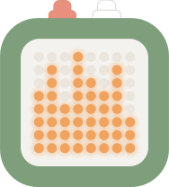

CLumo インストーラ
CLumo Installer
ブラウザから CLumo にファームウェアを書き込みます。ツールのインストールは不要です。
Flash CLumo's firmware from your browser. Nothing to install.
単独版アプリ不要
StandaloneNo app needed
ボタン 2 つだけで完結します。デジタルペット、ポモドーロタイマー、サイコロの 3 つのモード。Bluetooth もスマホも使いません。
Everything runs on the two buttons: a digital pet, a pomodoro timer, and dice. No Bluetooth, no phone.
単独版を書き込むFlash standaloneアプリ協調版Android アプリ連携
CompanionWith the Android app
Android アプリ「CLumo」と Bluetooth でつながります。ポモドーロ、タイマー、アプリで描いた絵を映すマイ表示、音に合わせて動くビジュアライザ。アプリは 最新の Release の clumo.apk です。
Pairs with the CLumo Android app over Bluetooth: pomodoro, a timer, pictures you draw in the app, and a visualizer that moves with your audio. The app is clumo.apk in the latest release.
PC から推奨
From a PCRecommended
本家の ESP Web Tools（Web Serial）を使います。PC の Chrome / Edge / Opera で動きます。スマホは使えません。
Uses the original ESP Web Tools over Web Serial. Works in Chrome, Edge, and Opera on a desktop. Phones are not supported.
この方法で進むContinue
PC または Android からWebUSB
From a PC or AndroidWebUSB
PC に加えて Android の Chrome（USB-OTG）からも書き込めます。コミュニティ製のフォーク（tasmota-esp-web-tools）を使います。
Also works from Chrome on Android over USB-OTG, using a community fork (tasmota-esp-web-tools).
この方法で進むContinue手順
Steps
- CLumo を USB ケーブルでつなぐ
- PC: そのままつなぐ
- Android: USB-OTG ケーブルでつなぎ、Chrome でこのページを開く
- 上の「インストール」を押す
- 表示されたシリアルポート / USB デバイスを選ぶ
- 書き込みが終わるのを待つ。自動で再起動します
- 「Select Port」のダイアログが出たら、書き込みは終わっています。同じ CLumo を選び直すと完了画面になります。閉じても構いません
- Connect CLumo over USB
- PC: plug it straight in
- Android: use a USB-OTG cable and open this page in Chrome
- Press "Install" above
- Pick the serial port or USB device it offers
- Wait for flashing to finish. The device restarts on its own
- If a "Select Port" dialog appears, flashing is already done. Pick the same CLumo again to reach the completion screen, or just close it
書き込んだあと
After flashing
- 「インストール完了」のあとに空のダイアログが出たら閉じて構いません。本体はもう動いています
- マトリクスが点灯し、最初のモードが表示されます
- 白ボタンを 1 秒長押しでモードが切り替わります。ペット → ポモドーロ → サイコロの順です
- 各モードでの橙 / 白の操作は 単独版の README にまとめてあります
- If an empty dialog appears after "Installation complete", just close it. The device is already running
- The matrix lights up with the first mode
- Hold the white button for a second to switch modes: pet, pomodoro, dice
- What orange and white do in each mode is in the standalone README
- 「インストール完了」のあとに空のダイアログが出たら閉じて構いません。本体はもう動いています
- マトリクスに接続待ちのアイコンが出て、最初のペアリングまでそのまま待ちます
- Android アプリ「CLumo」をインストールします。最新の Release の
clumo.apkです - アプリを開いて「CLumo を探す」を押し、見つかった CLumo に接続します。パスキーは
123456 - ポモドーロ、タイマー、マイ表示、ビジュアライザをアプリから使えます。本体の表示の意味は 協調版の README にまとめてあります
- If an empty dialog appears after "Installation complete", just close it. The device is already running
- The matrix shows the waiting-for-connection icon and stays on it until the first pairing
- Install the CLumo Android app:
clumo.apkfrom the latest release - Open the app, tap "Find CLumo", and connect to the one it finds. The passkey is
123456 - Pomodoro, timer, your own pictures, and the visualizer are then all in the app. What the device shows is explained in the companion README
デバイス情報
Device
- MCUESP32-C3
- LED8x8 マトリクス（MAX7219）8x8 matrix (MAX7219)
- ボタンButtons2 つTwo
- Bluetooth使いませんNot used
- BLE 名BLE nameCLumo-XXXX（末尾は個体ごと）CLumo-XXXX (suffix per unit)
- パスキーPasskey123456
Android では充電専用ではなくデータ通信対応の OTG ケーブルを使ってください。
初回の書き込みではフラッシュ全体を消去します。保存されていた設定はリセットされます。
On Android, use an OTG cable that carries data, not a charge-only one.
The first flash erases the whole flash memory, so any saved settings are reset.